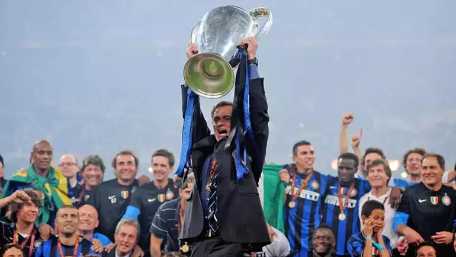

|  |
| Jose Mourinho... O bir dönemin en etkili teknik adamlarından, medya tarafından 'Special One' (Özel biri) olarak tanımlanan efsaneydi. 2003-2004 Porto ile Şampiyonlar Ligi zaferi yaşayarak Avrupa'ya peri masalı izleten, 2009-2010'da Inter ile zirveye çıkan Portekizli hoca son yıllarda düşüşe geçti. |
Bana iki kez Portekiz Milli Takımı'nın teknik direktörü olma fırsatı verildi. Birincisi Real Madrid'i çalıştırırken
yapıldı ama Florentino Perez bana 'Hiç şansın yok gidemezsin' dedi. İkinci teklif Roma'nın başındayken geldi.
Reddettikten birkaç ay sonra görevime son verildi ama pişman değilim.